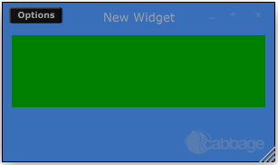

New Widgets, Part 1
In order to add new widgets you will need to set up a Cabbage build, based on your chosen operating system. The simplest and quickest build system to set up is on Linux, even if it means installing Linux on a spare partition first! For the purpose of this quick guide, it is assumed that you already have a working build system for Cabbage. If you need assistance in setting up a build system please visit the Cabbage forum and ask there. This guide assumes a basic level of C++ on the part of the reader. A knowledge of JUCE and the Csound API is beneficial but not necessary.
The sample widget described below is already part of the Cabbage code-base. All of the code presented and referenced below can be found in the Cabbage source.
A basic widget class.
All custom widgets classes must declared in CabbageCustomWidgets.h, while all function definitions should be implemented in the CabbageCustomWidgets.cpp. If you scroll towards the bottom of CabbageCustomWidgets.h you will see where the sample stepper widget is declared. You can add any new widgets directly after this declaration. Before declaring our new widget, it is worth looking at some of the files CabbageCustomWidgets.h includes.
#include "../JuceLibraryCode/JuceHeader.h"
#include "CabbageLookAndFeel.h"
#include "CabbageUtils.h"
#include "CabbageGUIClass.h"
The CabbageLookAndFeel file contains methods for painting components with a set look and feel. If your new widget uses any existing widgets such as sliders, buttons, comboboxes, etc, it is advised to use the CabbageLookAndFeel class to skin them in a way that is consistent to Cabbage. The CabbageUtils class contains several static methods that can be use for debugging and various other utility operations. The CabbageGUIType class, which is discussed in more detail later, is an abstract data type that holds information about the various attributes of a widget.
Your new widget class constructor, located towards the end of CabbageCustomWidgets.h can derive from any of JUCE's main GUI classes. The base class for all GUI widgets in JUCE is the Component class. Our simple class will inherit from this base class and in most cases will need a paint() method for drawing the component and an update(...) method for updating our widget from Csound. A very basic widget class might look like this.
class CabbageStepper : public Component
{
String name;
int numberOfSteps, tempo;
Colour colour, backgroundColour
public:
CabbageStepper (CabbageGUIType &cAttr, CabbagePluginAudioProcessorEditor* _owner)
: Component(),
owner(_owner)
{}
~CabbageStepper()
{}
void paint(Graphics& g)
{
g.fillAll(Colours::red);
}
void update(CabbageGUIType m_cAttr){}
private:
CabbagePluginAudioProcessorEditor* owner;
JUCE_DECLARE_NON_COPYABLE_WITH_LEAK_DETECTOR (CabbageStepper);
};
#endif
In order to keep things as clear as possible for this particular tutorial, I've included member method definitions within the class declaration. In reality however, function definitions should always reside in CabbageCustomWidgets.cpp, otherwise you will have problems with forward declarations and circular dependencies.
Each Cabbage widget gets passed a CabbageGUIType object. CabbageGUIType objects are created and instantiated based on lines of text in the Cabbage section of your code. Each CabbageGUIType object contains information about a particular widget, such as size, colour, position, etc. The CabbageGUIType class contains several methods for accessing a widget's properties. The simplest of these methods are:
float getNumProp(Identifier prop);
String getStringProp(Identifier prop);
These two methods, used extensively throughout the entire Cabbage code-base, can be passed strings that name the identifier you wish to access. For example, if you wanted users to be able to use a colour() identifier to set the colour of a new widget you could do something like this:
(...)
Colour widgetColour;
public:
CabbageStepper (CabbageGUIType &cAttr, CabbagePluginAudioProcessorEditor* _owner)
: Component(),
owner(_owner)
{
widgetColour = Colour::fromString(cAttr.getStringProp("colour"));
}
void paint(Graphics& g)
{
g.fillAll(widgetColour);
}
The second parameter to be passed to any new widget is a CabbagePluginAudioProcessorEditor object. This object will provide you with access to the plugin's processor class, as well as the underlying instance of Csound. We will see more on this in part 2 when we return to our simple class and add some functionality to it.
Parsing the Cabbage code for a new widget
In order to make the above widget appear on our plugin GUI window we need to make a few additions to a number of Cabbage source files. Every line of code in the CabbageAudioPluginProcessor::initialiseWidgets(...) method found in CabbageAudioPluginProcessor.cpp. This function iterates through two arrays, defined in CabbageGUIClass.h, that contains the names of each and every valid Cabbage widgets. Widgets are split into two categories. Those that can be automated by a host DAW, generally referred to a guiCtrls, and those that are controlled only through the plugin's GUI, generally referred to as layoutCtrls. You'll see that stepper has been added to the GUILayoutCtrls array in CabbageGUIClass.h. The names of any new widgets should be added to these arrays.
Creating an instance of a widget
If Cabbage finds a widget type when parsing the user code, it makes a call to the CabbagePluginAudioProcessorEditor::InsertGUIControls(...) method, passing it a unique CabbageGUIType object. Each CabbageGUIType object passed to this function contains information about that widget's attributes and properties. This method then calls a corresponding InsertWidget() method that is responsible for instantiating and displaying the widget in the plugin editor window. You will see in this method there is a call to an InsertStepper(...) method. Each new widget will need a new CabbagePluginAudioProcessorEditor::Insert...() method implementation and declaration. Don't forget to declare the method in CabbagePluginAudioProcesorEditor.h, otherwise you will get build errors when compiling.
Out simple InsertStepper(...) method looks like this.
void CabbagePluginAudioProcessorEditor::InsertStepper(CabbageGUIType &cAttr)
{
CabbageStepper* stepper = new CabbageStepper(cAttr, this);
float left = cAttr.getNumProp(CabbageIDs::left);
float top = cAttr.getNumProp(CabbageIDs::top);
float width = cAttr.getNumProp(CabbageIDs::width);
float height = cAttr.getNumProp(CabbageIDs::height);
//if control is not part of a plant, add mouse listener
if(cAttr.getStringProp("plant").isEmpty())
stepper->addMouseListener(this, true);
stepper->setVisible((cAttr.getNumProp(CabbageIDs::visible)==1 ? true : false));
stepper->getProperties().set(CabbageIDs::index, layoutComps.size());
layoutComps.add(stepper);
int idx = layoutComps.size()-1;
layoutComps[idx]->getProperties().set(CabbageIDs::lineNumber, cAttr.getNumProp(CabbageIDs::lineNumber));
setPositionOfComponent(left, top, width, height, layoutComps[idx], cAttr.getStringProp("reltoplant"));
cAttr.setStringProp(CabbageIDs::type, "label");
}
Any new Insert(...) method will need to do the following:
- call the new widget's class constructor and pass it a cAttr object and a pointer the CabbagePluginAudioProcessorEditor class
- add a mouse listener if the widget has not been added to a plant abstraction
- set the line number associated with the particular widget
- set whether it is visible or not
- give the widget a unique index ID
- add the widget to the
compsorlayoutCompsarray. These OwnedArrays are responsible for managing all GUI components that are added to your plugin's editor. - set the position and parent of the widget by calling
setPositionOfComponent(...)
There is one final step to be taken before Cabbage will successfully create our new widget type. That is to set up all default parameters for our new widget. Widgets must have default parameters set so that users don't have to set each one themselves in their code. This ensures each line of Cabbage code can be a succinct as possible. To add default parameters for your new widget type you will need to add some code to the CabbageGUIType class constructor. Here is what needs to be added to the CabbageGUIType constructor in CabbageGUIClass.h in order to create default parameters for our new stepper widget.
//===============stepper==================//
else if(strTokens[0].trim() == "stepper")
{
cabbageIdentifiers.set("basetype", "layout");
cabbageIdentifiers.set(CabbageIDs::top, 10);
cabbageIdentifiers.set(CabbageIDs::left, 10);
cabbageIdentifiers.set(CabbageIDs::width, 160);
cabbageIdentifiers.set(CabbageIDs::height, 2);
cabbageIdentifiers.set(CabbageIDs::colour, Colours::white.toString());
cabbageIdentifiers.set(CabbageIDs::type, "stepper");
cabbageIdentifiers.set(CabbageIDs::name, "stepper");
cabbageIdentifiers.set(CabbageIDs::name, cabbageIdentifiers.getWithDefault("name", "").toString()+String(ID));
cabbageIdentifiers.set(CabbageIDs::identchannel, "");
cabbageIdentifiers.set(CabbageIDs::visible, 1);
}
After building Cabbage with all the additions and modification described above we are ready to test our new widget. For this we just need to create a new Cabbage file that adds a stepper widget:
<Cabbage>
form size(300, 150), caption("New Widget"), pluginID("plu1"), colour(57, 110, 185)
stepper bounds(10, 10, 280, 80), colour("green")
</Cabbage>
<CsoundSynthesizer>
<CsOptions>
-m0d
</CsOptions>
<CsInstruments>
sr = 44100
ksmps = 16
nchnls = 2
0dbfs=1
instr 1
;do stuff
endin
</CsInstruments>
<CsScore>
i1 0 5000
</CsScore>
</CsoundSynthesizer>
The new widget will now appear in your plugin editor window.
